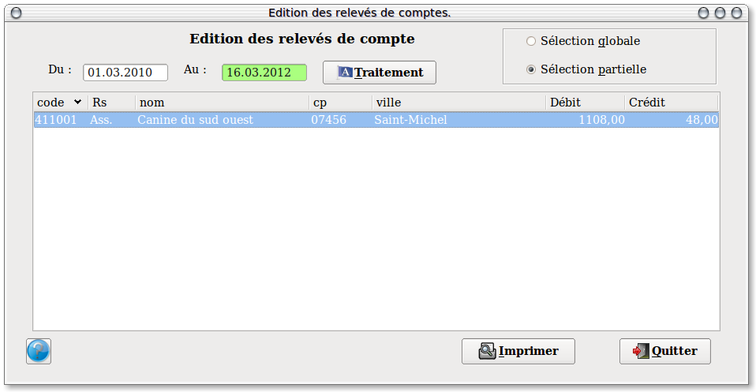
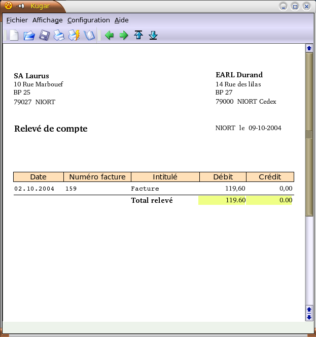

~ Comptabilité Laurux ~

~ Comptabilité Laurux ~ |
|
|
|

En arrivant dans le programme, la fourchette de dates par défaut commence au premier jour du mois jusqu'à la date en cours.
Tous les comptes clients dont la zone "Relevés de compte" est cochée apparaissent à l'écran. Deux choix sont alors possibles:
1- Cocher le bouton " Sélection globale" si vous souhaitez imprimer l'ensemble des relevés.
2- Cocher le bouton " Sélection partielle" puis sélectionnez le ou les comptes a imprimer si vous souhaitez n'imprimer que certains comptes.
Cliquer sur le bouton "Imprimer" pour lancer l'impression telle qu'elle apparait sur cette copie d'écran..

--- -------------------------------------------------------------------------------------------------------------------